2D Animated Shortfilm
Yola is a shortfilm about migration, connection and spiritual awakening. Had the pleasure to contribute to the making of this project along with an amazing team.
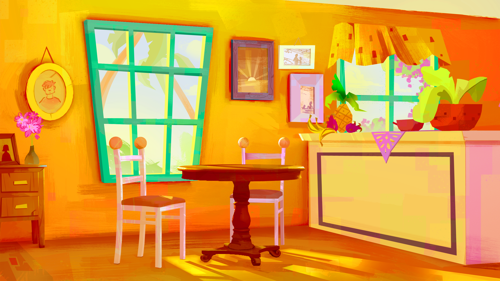
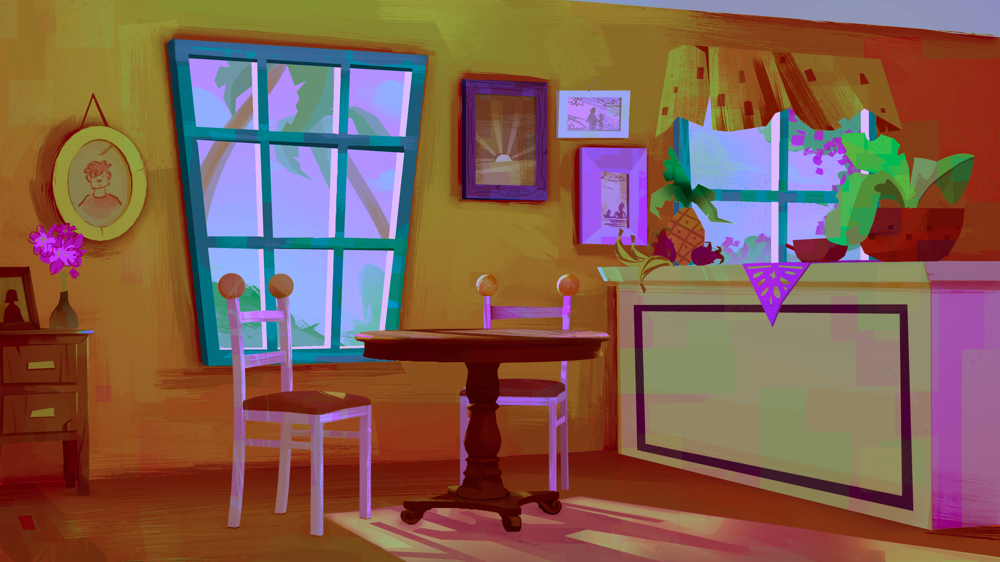
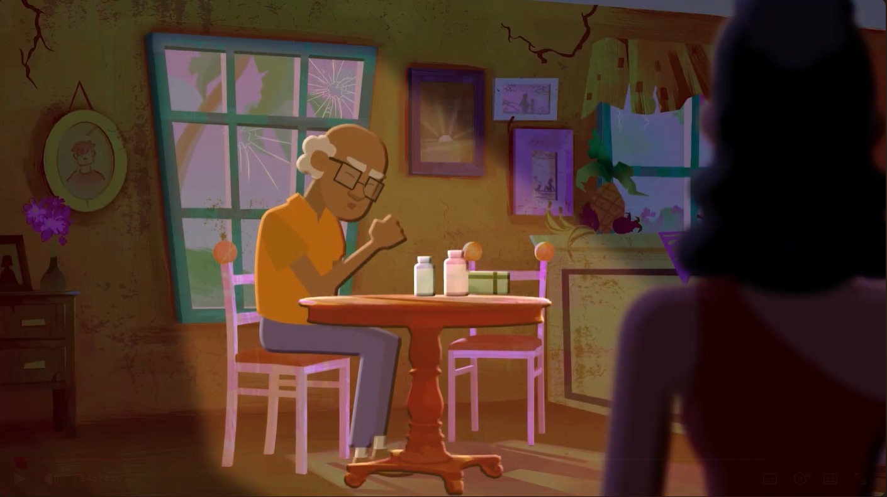
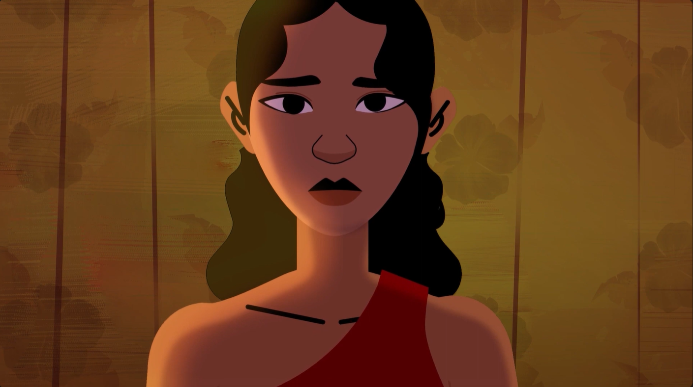
Designed environments conveying the visual style of the film, using backgrounds to create a contrast with the characters
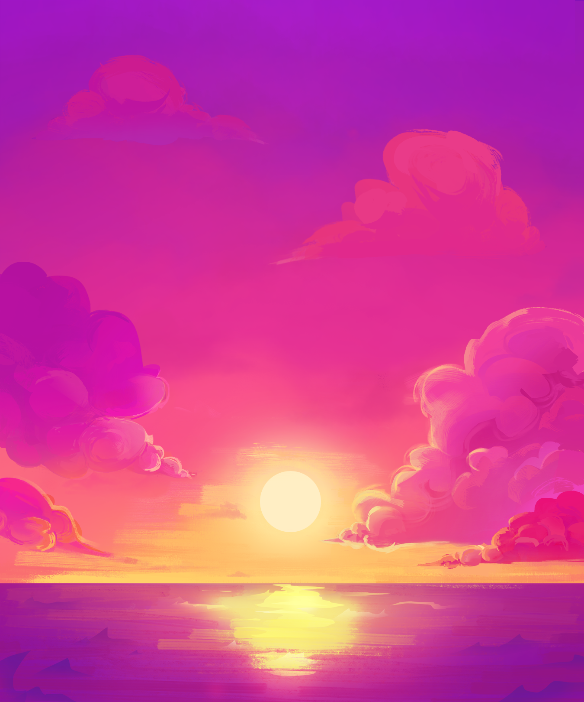
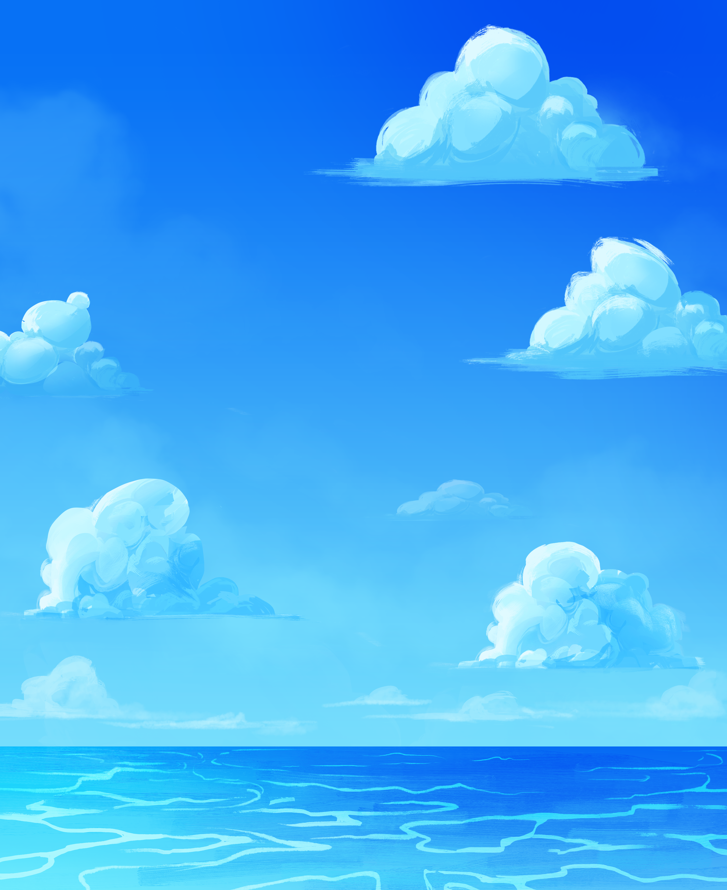
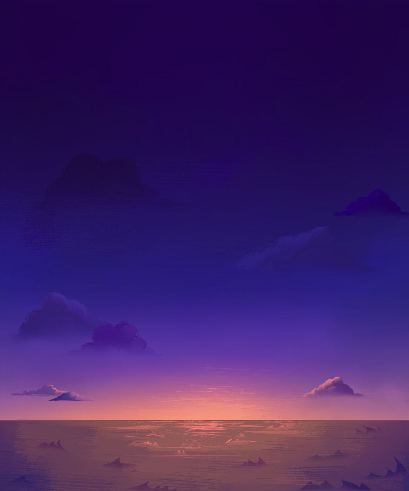
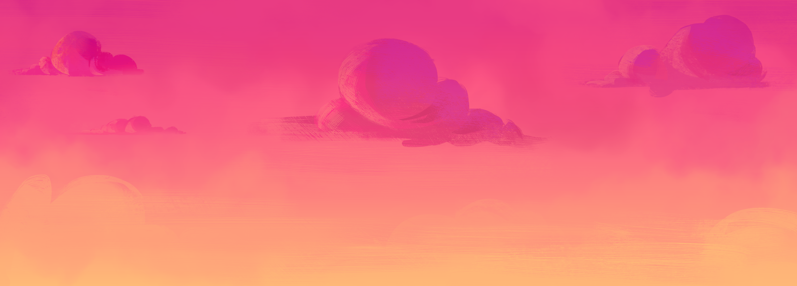
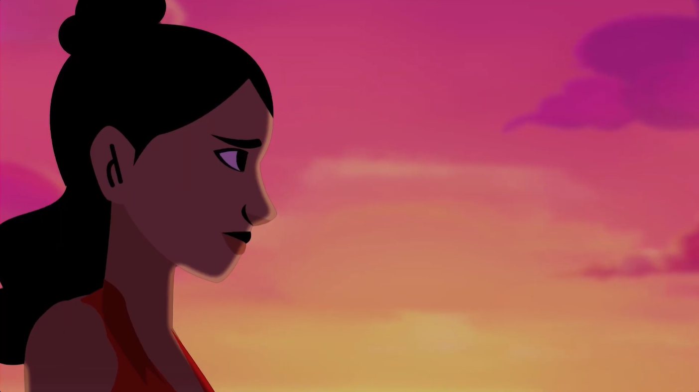
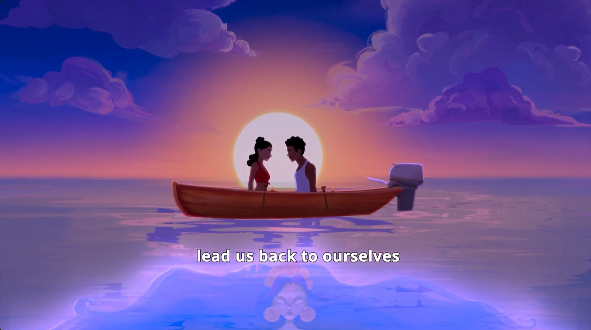
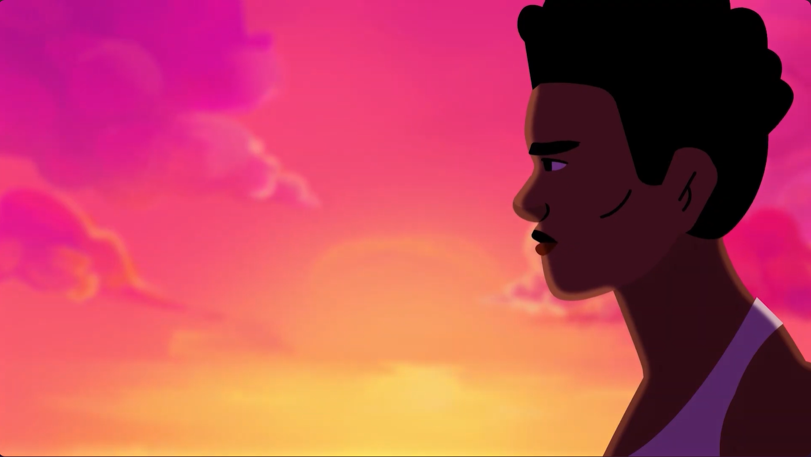
An important part of the film develops in the ocean, for this designed backgrounds of the sky reflecting different times of the day.
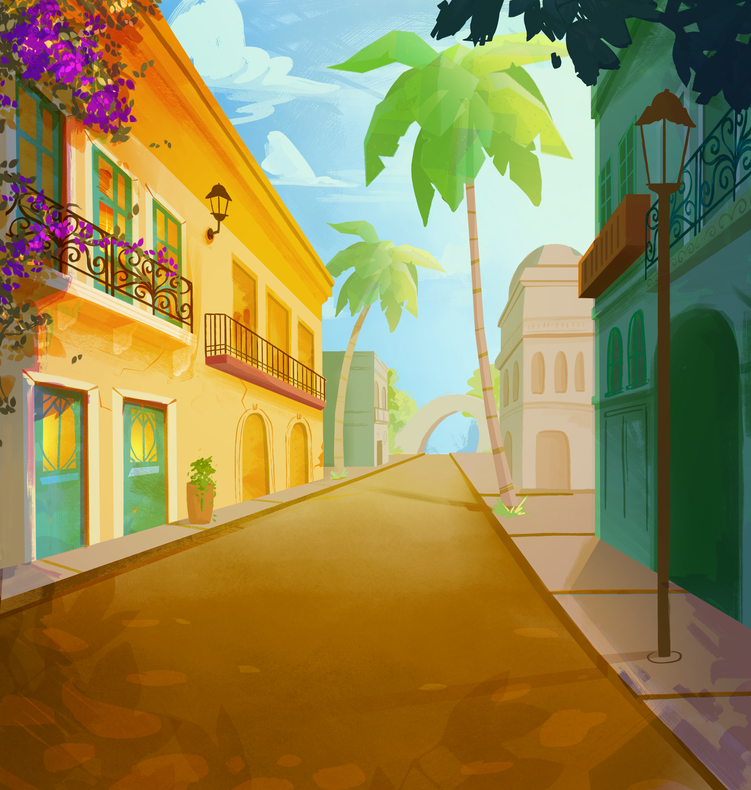
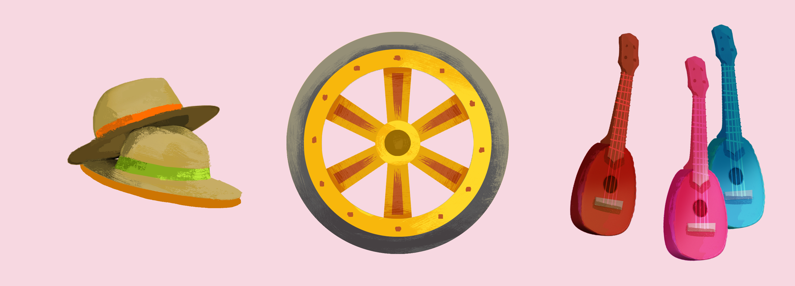
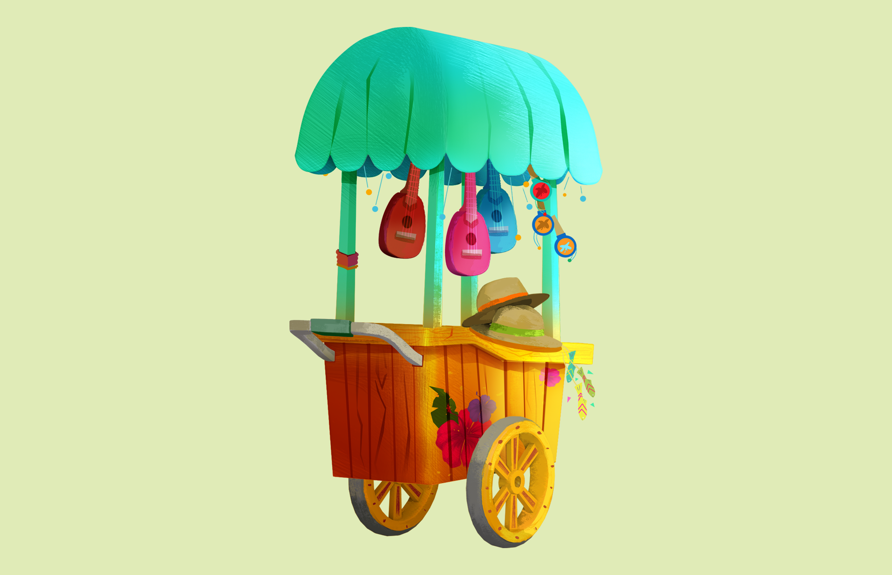
Created 2D props to be used and interacted with by characters on key scenes
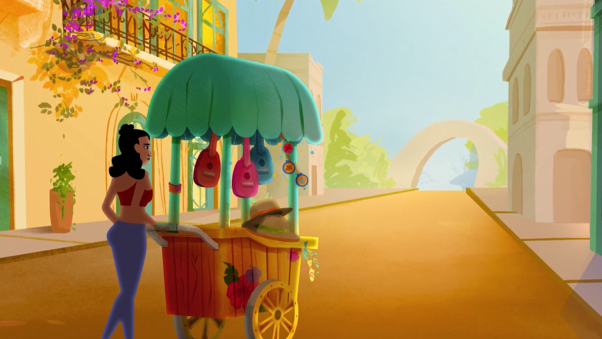
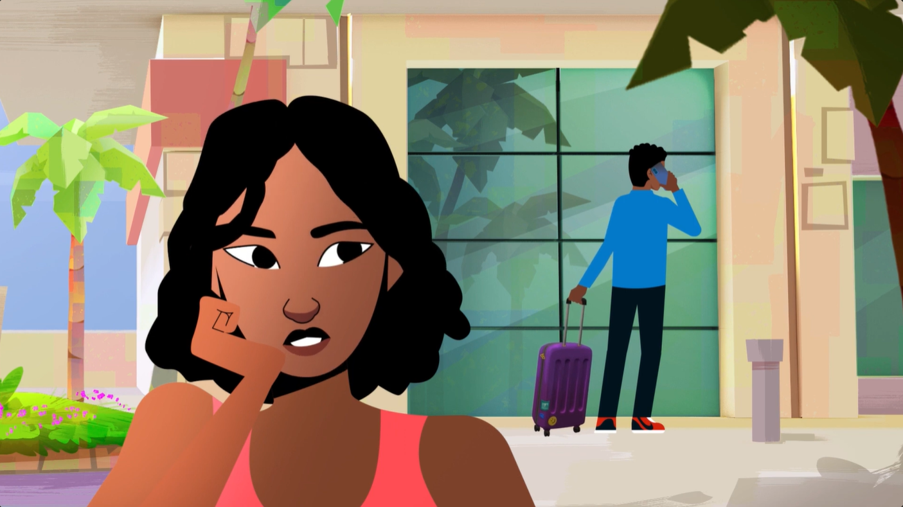
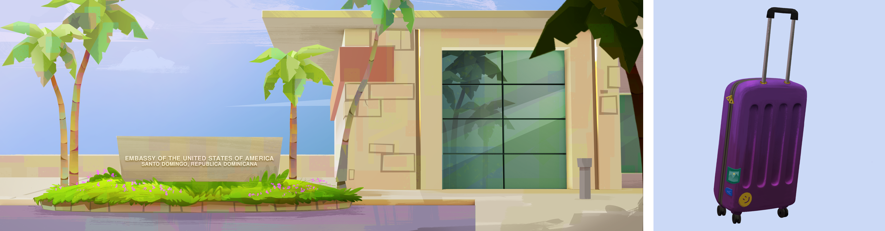